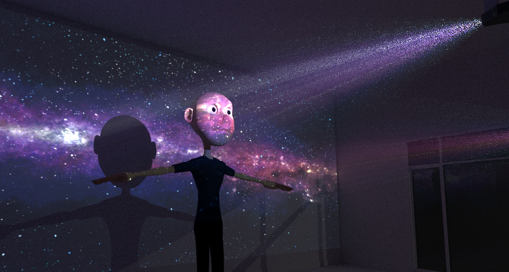
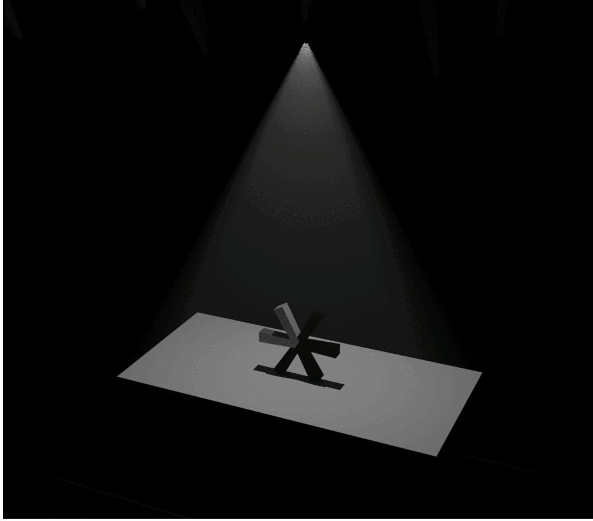
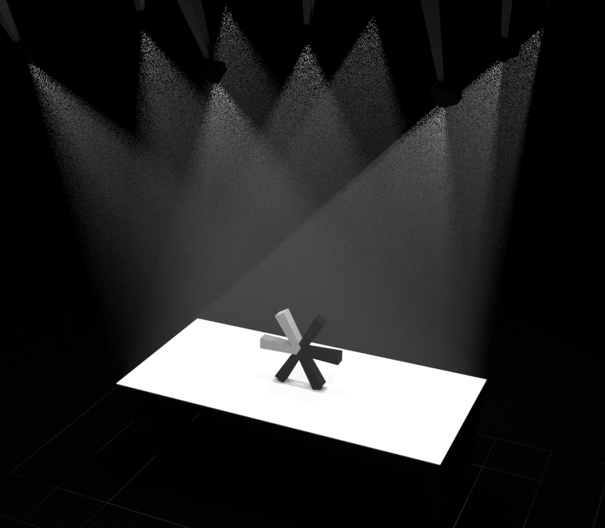
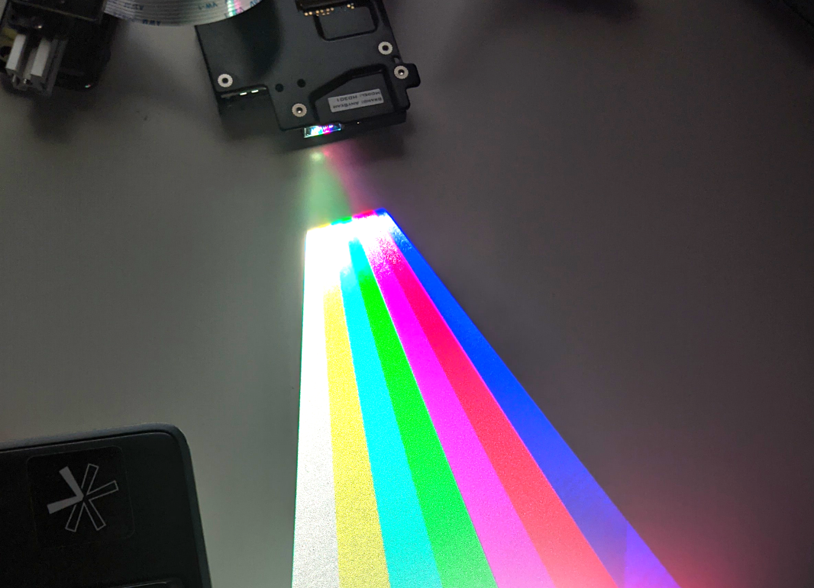
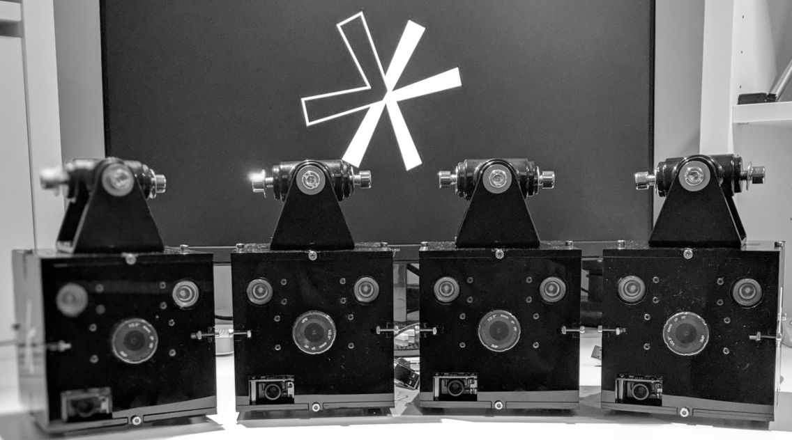

NO MORE SCREENS
Your brain is built for space
Neuroscience discovered that the human brain uses space, the 3-D environments in which we live, to provide context for information. If the
part of your brain that represents space is damaged, then you will be unable to store new memories.
What happens when information is removed from space?
This experiment is currently ongoing, and we are all subjects. Modern life is dominated by screens, the two-dimensional glass rectangles through which we access and interact with all digital information.
Voight-Kampff is building a world without screens
Humans need a way to interact with digital information, and each other, in space. We have recently developed a new technology that achieves this using a network of miniature laser projectors to control all of the light in a room. We call this a
Voight-Kampff Space.
How does it work?
We use light projection to display digital images on every surface in a room. However, the digital light projection technology currently available has a major flaw.

When users interact with the projected display, they block the source of light and cast a shadow. This not only breaks the illusion that the projected image is
part of the surface, but it is difficult for users to interact with the display.
Removing shadows from a projection display requires that every surface is illuminated from multiple directions.

With just two projectors, shadow intensity is reduced by half and the user experience vastly improved.

Illuminating the same surface from multiple directions requires that the projectors are positioned at different angles relative to the surface. However, conventional light projectors have a single focus plane that is perpendicular to the projection direction.
To solve this problem, Voight-Kampff uses laser-beam steering projectors, which do not have a fixed focal plane. The image has “infinite focus” as it is created by sweeping a narrow laser beam in a raster pattern.

The first Voight-Kampff prototype consisted of four "nodes". Each node included a laser projector, camera, infrared illumination, power supply, and single-board computer. The node's components were assembled into a small case and ceiling mounted.

We demonstrated this first
proof-of-concept design in 2020.
The next generation space, combining 40 redesigned nodes, is currently being constructed at Voight-Kampff's office in London, UK. It will be available for demonstration and collaboration at the end of 2021.
Please get in touch if you are interested in a living in a world without screens.
info@voight-kampff.tech